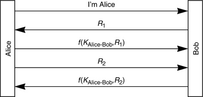
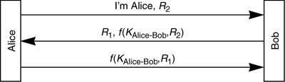
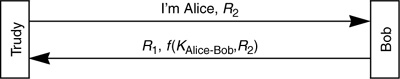
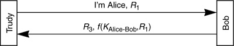
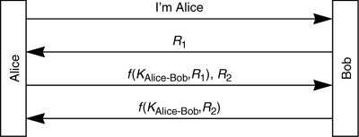
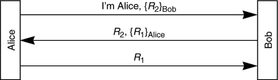
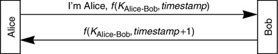

Networking Security Networking Security Networking Security Security Networking Security Networking Security Networking Charlie Kaufman Radia Perlman Mike Speciner Prentice Hall Network Security: Private Communication in a Public World, Second Edition Networking Security Networking Security Networking Security Security Networking Security Networking Security Networking Charlie Kaufman Radia Perlman Mike Speciner Prentice Hall Network Security: Private Communication in a Public World, Second Edition
11.2. Mutual Authentication
Suppose we want to do mutual authentication, i.e. Alice will know for sure she is communicating with Bob. We could just do an authentication exchange in each direction:

11.2.1. Reflection Attack
The first thing we might notice is that the protocol is inefficient. We can reduce the protocol down to three messages (instead of five used above) by putting more than one item of information into each message:
This version of the protocol has a security pitfall known as the reflection attack. Suppose Trudy wants to impersonate Alice to Bob. First Trudy starts Protocol 11-8, but when she receives the challenge from Bob, she cannot proceed further, because she can't encrypt R1.


"I can't explain myself, I'm afraid sir," said Alice, "because I'm not myself, you see."
ÂAlice in Wonderland
However, note that Trudy has managed to get Bob to encrypt R2. So at this point Trudy opens a second session to Bob. This time she uses R1 as the challenge to Bob:

Trudy can't go any further with this session, because she can't encrypt R3. But now she knows KAlice-Bob{R1}, so she can complete the first session.
This is a serious security flaw, and there are deployed protocols that contain this flaw. In many environments it is easy to exploit this, since it might be possible to open multiple simultaneous connections to the same server, or there might be multiple servers with the same secret for Alice (so Trudy can get a different server to compute f(KAlice-Bob,R1) so that she can impersonate Alice to Bob).
We can foil the reflection attack if we are careful and understand the pitfalls. Here are two methods of fixing the protocol, both of which are derived from the general principle don't have Alice and Bob do exactly the same thing:
different keysÂHave the key used to authenticate Alice be different from the key used to authenticate Bob. We could use two totally different keys shared by Alice and Bob at the cost of additional configuration and storage. Alternatively we could derive the key used for authenticating Bob from the key used to authenticate Alice. For instance, Bob's key might be -KAlice-Bob, or KAlice-Bob+1, or KAlice-Bob F0F0F0F0F0F0F0F016. Any of these would foil Trudy in her attempt to impersonate Alice to Bob since she would not be able to get Bob to encrypt anything using Alice's key. F0F0F0F0F0F0F0F016. Any of these would foil Trudy in her attempt to impersonate Alice to Bob since she would not be able to get Bob to encrypt anything using Alice's key. different challengesÂInsist that the challenge from the initiator (Alice) look different from the challenge from the responder. For instance, we might require that the initiator challenge be an odd number and the responder challenge be an even number. Or the name of the party that created the challenge might be concatenated with the challenge before encryption, so that if the challenge from Alice to Bob was R, Bob would encrypt Bob|R (the string Bob concatenated with R). This would foil Trudy, since in order to impersonate Alice to Bob, Trudy would need to get Bob to encrypt the string Alice concatenated with some number.
Notice that Protocol 11-7 did not suffer from the reflection attack. The reason is that it follows another good general principle of security protocol design: the initiator should be the first to prove its identity. Ideally, you shouldn't prove your identity until the other side does, but since that wouldn't work, the assumption is that the initiator is more likely to be the bad guy.
...if you only spoke when you were spoken to, and the other person always waited for you to begin, you see nobody would ever say anything...
ÂAlice (in Through the Looking Glass)
11.2.2. Password Guessing
Another security weakness of Protocol 11-8 (which doesn't exist in Protocol 11-7) is that Trudy can mount an off-line password-guessing attack without needing to eavesdrop. All she needs to do is send a message to Bob claiming to be Alice and enclosing a number to be encrypted, and Bob will obligingly return the encrypted value. Then Trudy has the pair <R, f(KAlice-Bob,R)> which she can use to check password guesses. We could fix that by making the protocol one message longer (Protocol 11-11).

Now Trudy can't obtain a quantity with which to do off-line password guessing by claiming to be Alice, but she can by impersonating Bob's address and tricking Alice into attempting a connection to her. The threat of having Trudy impersonate Bob should not be ignored, but it is much more difficult than impersonating Alice.
11.2.3. Public Keys
Mutual authentication can also be done with public key technology, assuming that Bob and Alice know each other's public keys. It can be done with three messages:

A variant is for Alice to send R2 and for Bob to return it signed (and similarly for Alice to sign R1).
Public key mutual authentication presents some special challenges. How does Alice (or Alice's workstation) know Bob's public key? Often the situation is that Alice is a human, working on a generic workstation. In such cases Alice isn't going to remember Bob's public key, nor is Alice's workstation likely to have it stored. It could be done by having Alice attach to something, hoping it's Bob, and having the thing she's talking to send its public key. But that would not be secure if Trudy is impersonating Bob.
We also have the problem of having Alice's workstation obtain Alice's private key when all Alice knows is a password. It is generally straightforward to convert a password into a secret key, because most secret key algorithms will accept any value of the right size as a key. Some public key algorithmsÂnotably RSAÂhave private keys that take special forms and cannot easily be derived from passwords. The usual method of dealing with this is to have Alice's workstation retrieve Alice's private key, encrypted with her password, from a directory service, or perhaps from Bob. It is not much more trouble to store, in the same place, information that would allow Alice to reliably learn Bob's public key. Two possible techniques:
Store Bob's public key encrypted with Alice's password. If anyone is impersonating Bob, they will not be able to give Alice a quantity encrypted with her password for which they'd know a corresponding private key. Store a certificate for Bob's public key, signed with Alice's private key. Once her workstation obtains her private key, it can validate the certificate for Bob's public key.
For more information on this, see Chapter 15 PKI (Public Key Infrastructure) and §12.4 Strong Password Credentials Download Protocols.
11.2.4. Timestamps
We can reduce the mutual authentication down to two messages by using timestamps instead of random numbers for challenges:

This two message variant is very useful because it is easy to add onto existing protocols (such as request/response protocols), since it does not add any additional messages. But it has to be done carefully. In the diagram we have Bob encrypt a timestamp later than Alice's timestamp. Obviously Bob can't send the same timestamp back to Alice, since that would hardly be mutual authentication. (Alice would be assured that she was either talking to Bob or someone smart enough to copy a field out of her request!) So in the exchange, Alice and Bob have to encrypt different timestamps, use different keys for encrypting the timestamp, concatenate their name to the timestamp before encrypting it, or use any other scheme that will cause them to be sending different things. And the issues involved with the one-way authentication done with timestamps apply here as well (time must not go backwards, they must remember values used within the clock skew, etc.).
Note that any modification to the timestamp would do. The idea of timestamp+1 comes from Needham-Schroeder, where they have one side use the incremented challenge of the other. We use timestamp+1 in our example because that's what Kerberos V4 uses, but timestamp+1 is probably not the best choice. timestamp+1 has the potential problem that Trudy eavesdropping could use KAlice-Bob{timestamp+1} to impersonate Alice. A better choice would be a flag concatenated with the timestamp indicating whether the initiator or responder is transmitting. Although the threat of Trudy using KAlice-Bob{timestamp+1} can be avoided if Bob keeps both timestamp and timestamp+1 in his replay cache, in general it is poor security practice to use something like +1, where there isn't anything intrinsically different between what Bob does and what Alice does. Also, if service Bob consists of multiple replicas all with the same key, where it would be difficult for a replica to keep track of timestamps used at other replicas, then the quantity Alice encrypts should include something unique to the replica she's talking to, such as its name or IP address.
|